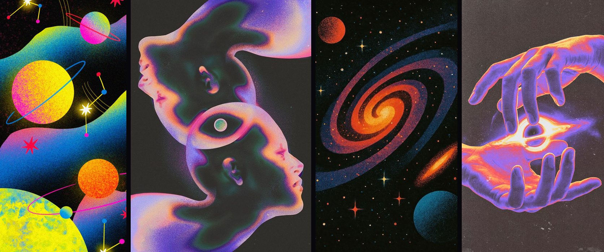
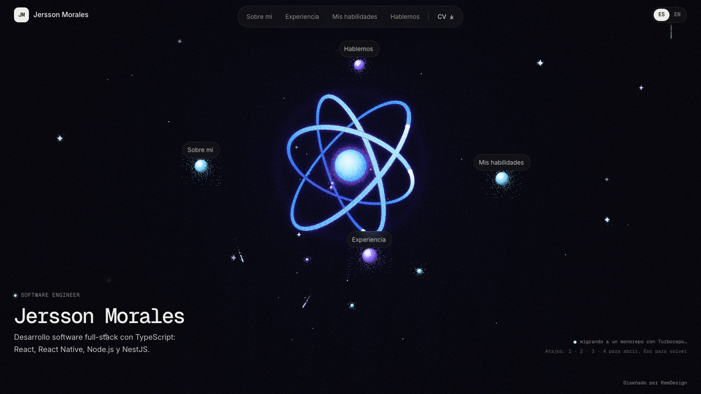
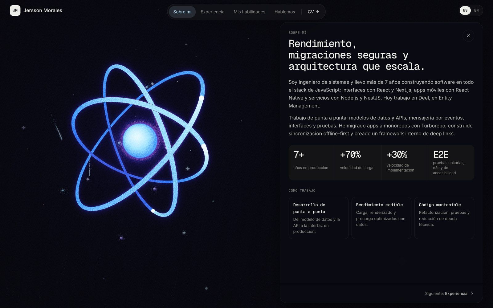
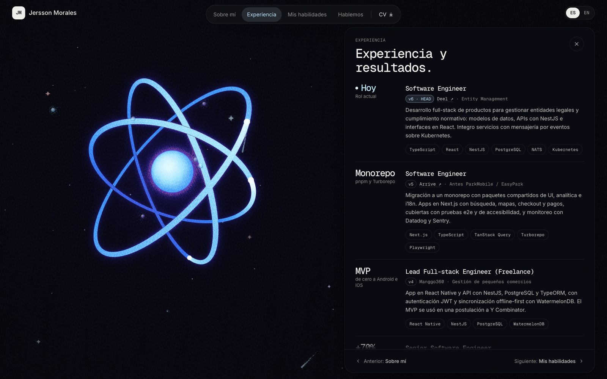
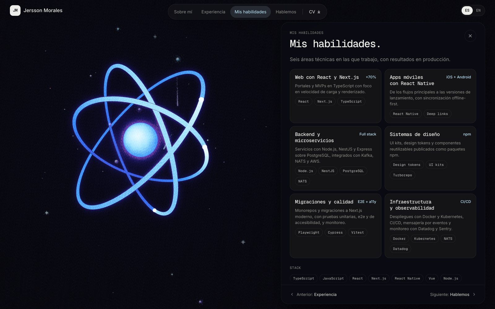
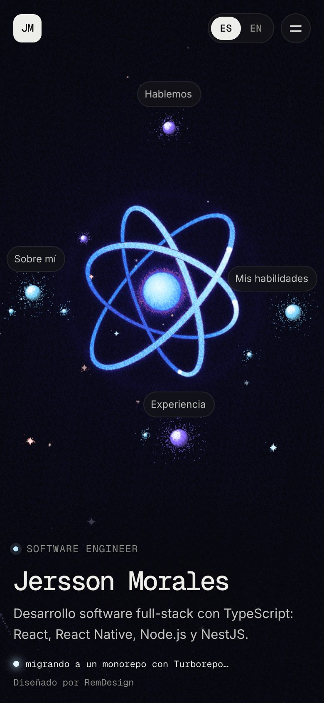

Página web profesional de un ingeniero de software
- Rol
- Diseño de producto y dirección creativa
- Cliente
- Jersson Morales, ingeniero de software full-stack
- Usuarios
- Reclutadores, líderes técnicos y clientes que evalúan su perfil
- Plataformas
- Web responsive: escritorio y móvil
- Herramientas
- Claude AI y Claude Design
- Estado
- Versión final publicada · validada con el cliente y con 4 usuarios · 2026
Jersson Morales es ingeniero de software full-stack, con más de siete años de experiencia. No tenía página web: su perfil profesional existía solo en su hoja de vida, que mostraba la información sin transmitir su criterio técnico. El encargo fue diseñar una experiencia que lo diferenciara frente a reclutadores y equipos técnicos, con un tono profesional y una estética minimalista, moderna y creativa.
Crear una experiencia memorable sobre desarrollo de software sin que la decoración compitiera con la información, y sin perder legibilidad, navegación ni accesibilidad.
El concepto es el núcleo: el punto donde todo converge. En el desarrollo de software, muchas piezas (commits, decisiones y tecnologías) terminan integradas en un sistema que funciona. Traduje esa idea a un átomo: el perfil de Jersson es el núcleo y sus cuatro secciones son partículas en órbita. La metáfora organiza la interfaz en lugar de decorarla, porque navegar consiste en acercar una partícula al núcleo.
- Referencias.Partí de un video con un fuego central y pilares radiales, de cuatro referencias gráficas con grano, gradiente térmico y vocabulario cósmico, y del logo de React como símbolo de su stack.
- Análisis crítico.Separé lo que aportaba cada referencia, como la dinámica de convergencia y la textura granulada, de lo que no comunicaba desarrollo de software, como una escena demasiado literal o un acabado fotorrealista.
- Exploración divergente.Desarrollé cinco conceptos: navegación espacial con un avatar 3D, el compilador, un átomo con moléculas, un procesador sobre una oblea de silicio y una esfera de luz.
- Convergencia.Elegí el núcleo porque conectaba la metáfora con el contenido, permitía integrar la navegación en la escena y admitía un lenguaje gráfico propio, lejos de los recursos genéricos de los productos tecnológicos.
- Diferenciación.El átomo hace un guiño al logo de React, la tecnología central del perfil de Jersson. Esa asociación une en una sola imagen su especialidad técnica y la dimensión creativa de la web. Para que fuera un símbolo propio y no una copia del logo, lo reinterpreté con órbitas de distinto tamaño, ángulos irregulares y un grosor que cambia con la profundidad.

Apliqué mi proceso de diseño en cinco etapas, en ciclos cortos sobre la web real.
- Entender.Revisé el encargo y la hoja de vida vigente, y analicé las referencias visuales. El contenido era sólido, pero la experiencia no diferenciaba el perfil. Entregables: brief, auditoría de contenido y análisis de referencias.
- Definir.Convertí el encargo en requisitos y en una jerarquía de contenido: logros y métricas primero, y empresas en segundo plano y sin fechas. Organicé el contenido en cuatro secciones. Entregables: requisitos y arquitectura de información.
- Idear.Exploré los cinco conceptos como prototipos navegables con contenido real, para comparar recorridos y no solo imágenes. Entregables: conceptos y flujos de navegación.
- Prototipar.Llevé la propuesta del núcleo a alta fidelidad con Claude Design y Claude AI: escena, interfaz responsive y todos los estados de interacción. Entregables: sistema visual y prototipo funcional publicado.
- Validar.Validé cada iteración con Jersson como usuario y cliente, en escritorio y en móvil, y lo complementé con una revisión heurística. Con la versión final hice pruebas de usabilidad con cuatro usuarios. Entregables: validación con el cliente, pruebas de usabilidad y ajustes priorizados.
- Claude AI. Investigación, análisis crítico de cada concepto frente a las referencias y redacción del contenido a partir de la hoja de vida.
- Claude Design. Prototipado en alta fidelidad sobre la web real: escena, navegación y responsive, con iteraciones rápidas.
- Heurísticas de Nielsen. Visibilidad del estado, porque la partícula responde al señalarla; control y libertad, porque la carga se puede saltar; y consistencia entre la escena y la barra superior.
- Leyes de UX. Ley de Hick para limitar la navegación a cuatro secciones, efecto Von Restorff para dejar un solo protagonista visual por sección y umbral de Doherty para responder de inmediato a cada interacción.
- Jerarquía y escaneabilidad. Síntesis de una o dos frases por experiencia y cada métrica una sola vez.
- Accesibilidad. Navegación por teclado, enlaces directos a cada sección, soporte para movimiento reducido y texto legible sobre la escena.
- Una animación con significado.Cada luz de trabajo que llega al núcleo cambia el texto inferior por una actividad real de la hoja de vida.
- La navegación dentro de la escena.Al señalar una sección en la barra superior o en la escena, su partícula se acerca y envía destellos. Al abrirla, el núcleo la absorbe y de ahí nace el panel.
- Elegir con calma.La órbita se detiene al señalar una sección, y el scroll invierte el giro con un impulso visible.
- Los textos mandan.Las luces se atenúan cuando pasan sobre el texto.
- Una carga con intención.Primero oscuridad, luego surge el núcleo, los electrones trazan sus órbitas y una onda de luz da paso a la interfaz. Se salta con un clic o una tecla, y no aparece al entrar por un enlace directo a una sección.
- Responsive sin cambios innecesarios.En móvil, la barra superior pasa a un menú y el texto conserva la estructura de escritorio.
Extraje una línea gráfica común de cuatro referencias y la traduje a la escena.
- Grano como material. El color se disuelve en punteado, sin degradados lisos.
- Gradiente térmico. Hielo que pasa a azul y violeta, con un filo cálido mínimo.
- Siluetas nítidas. Núcleo y partículas con borde definido y sombreado granulado.
- Vocabulario cósmico. Destellos de cuatro puntas, confeti de puntos y haces finos.
- Casi negro con textura. Un fondo #08080C que se tiñe de índigo hacia el centro.
Jersson fue el usuario de referencia. Revisó cada iteración navegando la web publicada en escritorio y en móvil, y entregó sus observaciones como listas numeradas de ajustes. Cada revisión definió la siguiente decisión.
- El concepto hablaba de otra cosa.La primera escena se parecía demasiado a su referencia y no comunicaba desarrollo de software. Mantuve la convergencia hacia un centro, pero le di el significado de compilar código.
- La decoración competía con el contenido.Había demasiados commits en pantalla. Limité las etiquetas a tres a la vez y dejé un solo protagonista visual por sección.
- La propuesta podía ser genérica.Una esfera brillante sobre negro es un recurso común. La conecté con su trabajo, llevé la navegación a la escena y la convertí en un átomo propio.
- El estilo no correspondía a las referencias.La luz parecía fotorrealista y la esfera recordaba a una luna. Reconstruí el estilo con grano y gradiente térmico, y limité el brillo a las órbitas.
- El contenido debía ser fiel.Algunos textos no coincidían con la hoja de vida vigente. La tomé como única fuente de verdad y los reescribí hacia decisiones y resultados.
Con la versión final hice pruebas de usabilidad con cuatro usuarios, que resolvieron tareas básicas de la web.
- Buscar información. Encontrar datos concretos dentro de las secciones.
- Descargar la hoja de vida. Ubicar y usar el acceso al CV.
- Conocer el perfil. Entender quién es Jersson y qué hace a partir del recorrido.
Los cuatro completaron todas las tareas sin dificultades de navegación, y valoraron de forma positiva el diseño. El hallazgo principal es que la navegación por partículas se entiende sin explicación previa, aunque la muestra es pequeña y cualitativa.
Jersson pasó de no tener presencia web a una página profesional con una escena interactiva en la que la navegación forma parte de la animación. La propuesta del núcleo, validada con el cliente, reemplazó a todas las versiones anteriores. En las pruebas, los cuatro usuarios completaron todas las tareas sin dificultades de navegación.
- Navegación en la escenaCada sección es una partícula que se acerca al señalarla y nace del núcleo al abrirse.
- Animación con significadoCada luz que llega al núcleo muestra una actividad real de la hoja de vida.
- Un átomo propioUna identidad de grano y gradiente térmico, distinta de su referencia.
Prototipar sobre la web real revela problemas que una imagen aislada no muestra. Una referencia inspira, pero no define: hay que traducirla al contexto. Iterar también es descartar, y una animación resulta propia cuando se conecta con el contenido. La calma se diseña: depende del ritmo, de la jerarquía y de lo que decides quitar.
- Ampliar las pruebas a más reclutadores y líderes técnicos, con tareas medidas por tiempo y éxito.
- Medir con analítica cómo recorren la web quienes la visitan.
Vídeos y capturas de la propuesta publicada.




